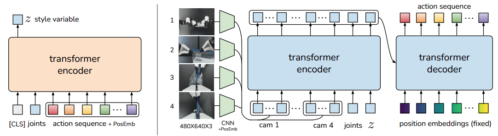
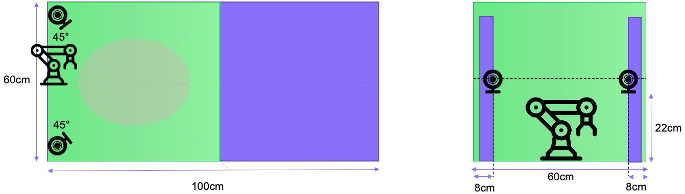

AI for Robotics
Imitation Learning - Action Chunking with Transformers (ACT)
Action Chunking with Transformers (ACT) is a Conditional Variational Autoencoder (CVAE) introduced in the paper Learning Fine-Grained Bimanual Manipulation with Low-Cost Hardware by Zhao et al [paper].
The policy was designed to enable precise, contact-rich manipulation tasks using affordable hardware and minimal demonstration data.Architecture :
- Vision backbone : ResNet-18 CNN processes images from multiple camera viewpoints
- Transformer Encoder: synthesize information from camera features, joint positions and a learned latent variable (z)
- Transformer Decoder: generates coherent action sequences using cross-attention

Setup
We adopted a two-camera setup (stereoscopy), allowing the model to acquire a better depth estimate. Camera resolution is 640x480px at 30 fps.
The model was trained to be robust to vibrations caused by a lightweight setup. It is important to correctly fix the pose of the arm, the cameras, and the RFID card reader, as these parameters will be learned by our model.

Results
Task A. Point the red cross (first step)
Dataset consists of 100 episodes varying cross position, background and lighting.
Task B. Scan a badge
Same setup (camera, arms, etc.). Dataset consists of 100 episodes varying badge pose (position and orientation), background and lightning.
This scenario is much more complex, leading to an increased dataset acquisition time. For example, we make sure not to pinch the fingers of the person holding out the badge (safety). With this type of gripper, it is necessary to catch two edges of the badge to prevent it from slipping. This also makes it easier to scan the badge on a potential RFID card reader.